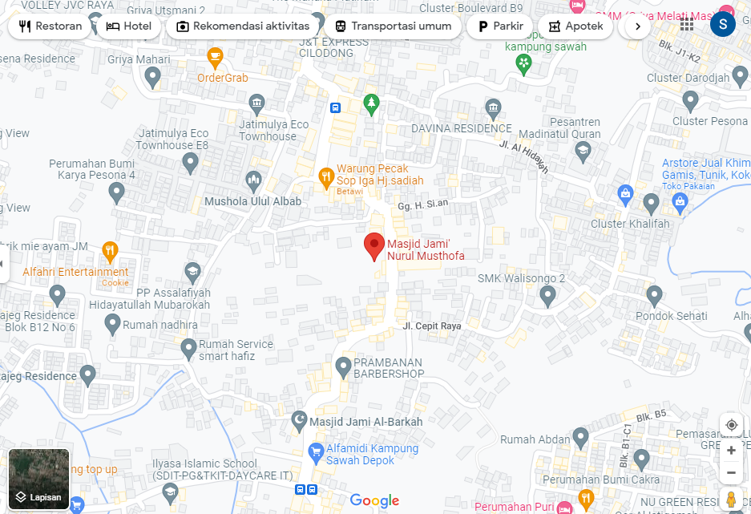

Direktori Data Mesjid Kota Depok
Profil Masjid Jami Nurul Mustofa, Jagakarsa Depok
Galeri Foto

Sejarah Majid Jami Nurul Musthofa
Masjid Jami Chalid Nurul Musthofa mulai dibangun pada tahun 2016. Tahun 2016 mulai dilakukan pengerukan tanah yang semula merupakan rawa-rawa. Tahun 2017, pembangunan masjid secara fisik dimulai dan masih berlangsung hingga kini. Pada tahun 2019, dikabarkan pembangunan masjid sudah menyentuh 80% dan sejak saat itu sudah mulai digunakan untuk kegiatan-kegiatan. Tidak sedikit pula orang yang datang kemari khusus untuk wisata religi. Yang menarik dari Masjid Nurul Musthofa adalah konsepnya yang menyerupai arsitektur masjid besar di Madinah, yakni Masjid Nabawi. Masjid dengan dinding bercat putih ini memiliki 10 kubah dan 2 menara. Tidak seperti kubah masjid yang biasa kita lihat berbentuk setengah bola, kubah Masjid Nurul Musthofa ini cenderung berbentuk lonjong. Gerbang masjid ini juga dibuat rendah, seakan memberi kesan masjid ini terbuka dan dapat didatangi oleh siapa pun.
Lokasi dan Alamat Masjid Jami Nurul Musthofa
Lokasi masjid Jami Nurul Musthofa berada di jalan.Manggis No.94, RT.1/RW.1, Cigancur, Kec.Jagakarsa Depok
Testimony & Komentar
Pengurus Masjid
Pejabat 1
Warga 1